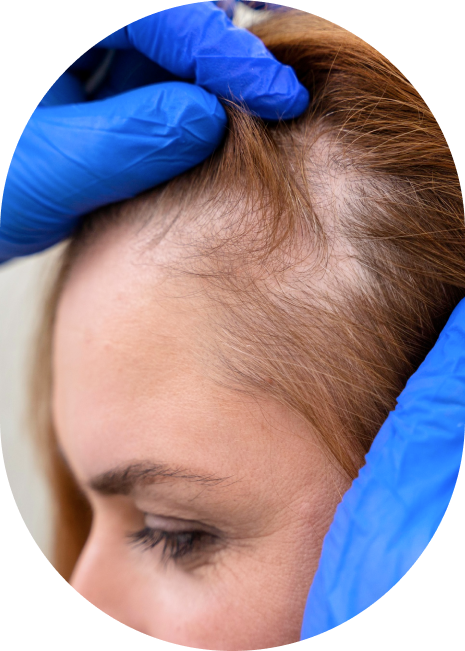

Удаление новообразований лазером
Трихология в МЦ «Чистая Кожа»
Лечение волос - услуги трихологии в городе Дзержинск Нижегородская область. Косметология в Дзержинске, записаться на услуги трихологии в клинику “Чистая Кожа”
Удаление новообразований жидким азотом
Основные услуги
Кто такие врачи-трихологи?


Трихология – это медицинская специальность, которая занимается изучением и лечением заболеваний и проблем, связанных с волосами и кожей головы. Термин "трихология" происходит от греческих слов "трихос" (волос) и "логос" (учение).
Трихологи - специалисты, которые обладают глубокими знаниями о структуре и функции волос, а также различных факторах, влияющих на их здоровье. Они проводят диагностику и лечение различных проблем волос, таких как выпадение волос, перхоть, ломкость и т. д. Также врачи-трихологи могут заниматься восстановлением волос и профилактикой их проблем.
Одной из основных областей интереса трихологии является изучение причин и механизмов выпадения волос. Потеря волос может быть вызвана различными факторами, включая наследственность, гормональные изменения, стресс, питание, инфекции и другие заболевания. Трихологи проводят комплексное обследование пациента, включая анализ кожи головы, анализ состояния волос и исследование их роста. На основе полученных данных, определяются причины проблемы и разрабатывается индивидуальный план лечения.
Инструмент исследования
Трихоскопия является важным инструментом исследования, применяемым в трихологии. Это метод диагностики, позволяющий подробно изучить состояние волос и кожи головы с помощью специального устройства - трихоскопа.
Чем лечат заболевания кожи головы и волос?
В работе трихологов широко используются и другие различные методы и техники, включая медикаментозное лечение,физиотерапию, мезотерапию, лазерное лечение (плазмотерапию волос), трансплантацию волос и другие процедуры. Кроме того, трихологи могут давать рекомендации по уходу за волосами и кожей головы, подбирать специальные средства и проводить профилактические мероприятия для поддержания здоровья волос. Трихология является многогранным исследовательским направлением, которое объединяет медицинские, биологические и косметологические аспекты. Важной частью работы трихологов является консультирование пациентов и обучение их правильному уходу за волосами и кожей головы. Здоровые волосы не только важны с эстетической точки зрения, но также являются показателем общего состояния организма.